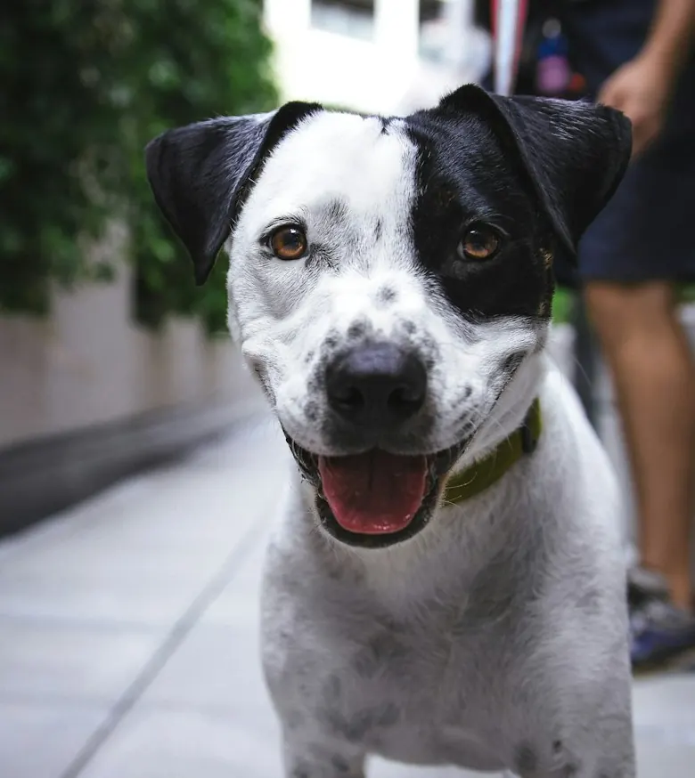
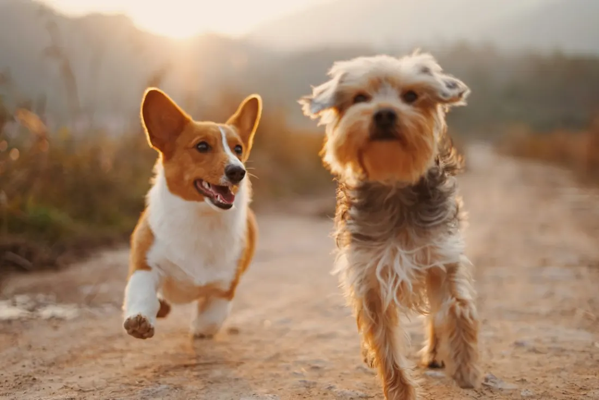
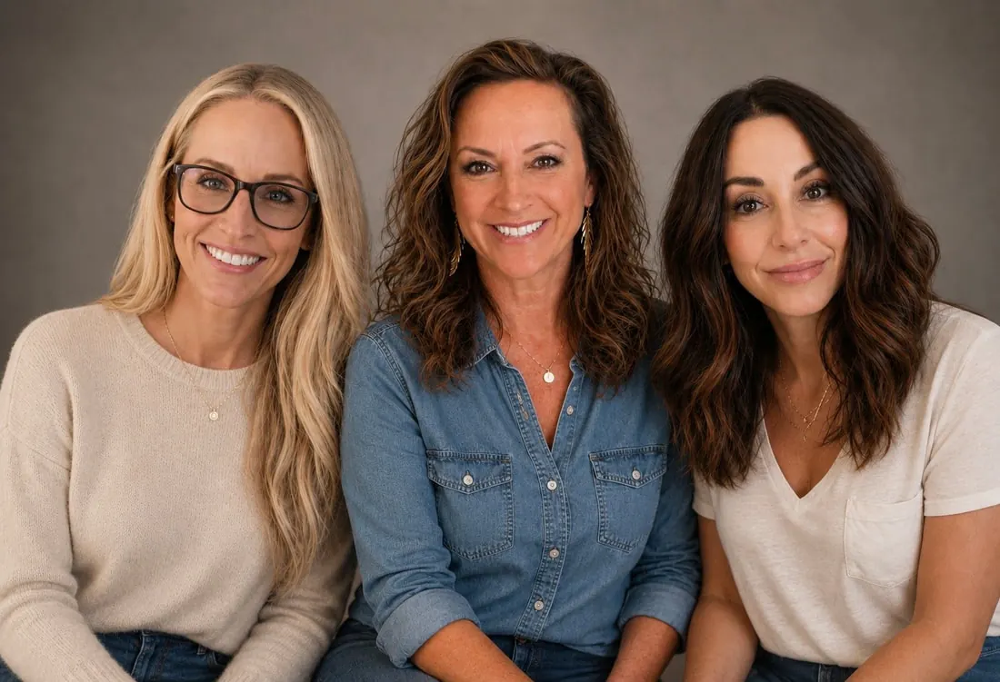

Needs a foster
Needs a foster
501(c)(3) Foster-based dog rescue · Cypress, TX
Rescue dogs ready for the right home.
We save unwanted, abused and abandoned dogs from overcrowded shelters and desperate situations. We give them medical care, training and a foster home, then match them with the family that fits them best.
- 100% vettedbefore every adoption
- Foster-basedevery dog lives in a home
- Volunteer-runsince 2019

We match each dog to a homeNot first-come, first-served
Spayed, chipped, vaccinatedIncluded in the $350 fee
2019
Founded in Cypress, Texas
100%
Volunteer-run program
$350
Adoption fee covers spay/neuter, microchip, rabies shot and other vaccines
All♥
Breeds and sizes welcome, purebred or mutt


no dog forgotten ♥
Our mission
A voice for the voiceless.
Our mission is to give unwanted, abused and abandoned animals a second chance.
We take in dogs from overcrowded shelters and desperate situations. We provide the medical care and training they need, and we prepare them to become cherished members of loving families. We also teach our community about responsible pet ownership and the importance of spaying and neutering.
- Top-notch vet care and heartworm treatment when needed
- Behavioral evaluations and training for adult intakes
- Every dog is matched to the home that fits their needs
Adoptable now
See all dogs
Looking for their people
Every dog is fully vetted and lives in a foster home until adopted.
Needs a foster
 NewSample
NewSample
 Sample
Sample
Purebred or mutt, they all deserve a great home.
See every adoptable dog on our Petfinder page, updated by our fosters.
Browse on Petfinder
How adoption works
Four steps to adopt
We don't adopt first-come, first-served. We take the time to match each dog with the home that fits them, so the adoption lasts.
Apply online
Fill out our adoption application. You need an approved application before a meet and greet.
Vet check
We check in with your vet to make sure your current pets are up to date and cared for.
Home visit
A friendly home check helps us confirm it's the right fit for the dog's needs.
Meet & adopt
Meet the dog, sign the adoption contract and take them home.
It takes a village
Three ways to help
Without committed fosters and donors, we can't take dogs into our program.
Adopt
Give a fully vetted rescue dog a forever home. We help you find a dog that fits your home.
Meet the dogsFoster
We cover all medical costs. You provide an indoor home, food, love and basic care. Each foster home lets us take in another dog.
How fostering worksDonate
Your tax-deductible gift pays for vaccines, surgeries and heartworm treatment. Give with PayPal, Venmo or Zelle.
Give today
Who we are
Run by experienced rescue volunteers.
We formed Big Love Rescue to help homeless animals in our community who wouldn't otherwise have a chance.
We're a 100% volunteer team. We answer emails between day jobs, vet runs and adoption events, so thank you for your patience when you reach out.
Christina SimsBoard of directors
Tonya MathewsBoard of directors
Gina EvansBoard of directors
Donate
Your gift pays for vet care.
Big Love Rescue is a donation-based 501(c)(3). Every gift is tax-deductible and pays for vet care and supplies for dogs in our program.
- Spay/neuter, microchips and vaccines
- Heartworm treatment for positive adults
- Supplies for foster families
Choose an amount
$50 helps cover a microchip and rabies vaccine for a new intake.
Donate with PayPalPrefer Venmo or Zelle? See all ways to give